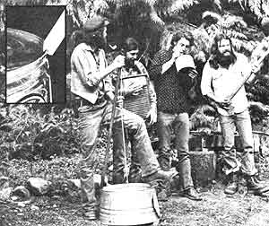

Marc Bristol and other Washington State grassroots musicians wail away on a gutbucket, washboard, and jug (the axe is a gag). For Marc's original homegrown music column which featured gutbucket, washboard, jug, kazoo, musical saw, and spoons ""makin' and playin' ""instructions-see MOTHER NO. 50. Inset shows gutbucket""notch and bevel""details.